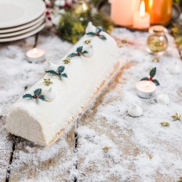

Bûche citron framboise

Aujourd’hui je vous retrouve avec une recette de bûche de Noël et j’en suis vraiment super fière car c’est la première recette de bûche que je poste ici (autant vous dire que je me suis vraiment appliquée). Vous trouverez donc ici ma recette de bûche citron framboise et j’espère qu’elle vous plaira.
Ah les bûches !! C’est le dessert de Noël qui aura su résister aux changements de mode, d’envies et aujourd’hui quasiment tout le monde fête encore Noël avec ce dessert traditionnel. Avant même d’être un dessert on faisait déjà brûler une très grosse bûche, souvent d’un arbre fruitier à la veillée de Noël et c’est d’ailleurs de cette époque que vient la création de ce dessert si populaire. Je ne vais pas vous raconter l’histoire car elle est looongue et finalement ce qui vous intéresse c’est la recette de cette bûche au citron et à la framboise! Une bûche on ne va pas se le cacher c’est long à faire, très long même si l’on compare à un gâteau au yaourt ou aux crinkles de l’autre jour. Mais quand on la démoule, qu’on la décore et surtout quand on coupe la première part et qu’on aperçoit l’insert parfaitement formé et la mousse qui se tient tous nos efforts sont enfin récompensés! Dans la recette j’ai dit qu’il fallait la sortir 3 heures avant de la servir et je maintiens ce que j’ai dit mais au cas il y a par ici des têtes en l’air ou des personnes qui voudraient en garder pour le lendemain, j’ai fait le test et oui elle tient parfaitement si elle est conservée au frais. J’ai fais ce test un peu absurde parce que dans pas mal de recettes j’ai trouvé 10-15g de gélatine et j’ai trouvé ça énorme! Je n’aime pas trop utiliser de gélatine de manière générale alors j’ai fait le pari de ne mettre que 7g et c’est largement suffisant!! Je n’ai pas testé l’agar-agar mais si l’une d’entre vous (ou l’un d’entre vous) essaye qu’il n’hésite pas à venir donner son avis. Aujourd’hui je suis vraiment super fière de vous présenter ma bûche citron framboise parce que c’est un dessert traditionnel mais aussi parce que j’avais vraiment envie de proposer un dessert pour cette fin d’année qui représente ce que j’aime et de pouvoir le partager avec vous (j’avais peur de manquer de temps pour venir écrire cette recette). Pour la petite histoire, je me suis vraiment pris la tête avec ce spray velours car il avait un défaut de fabrication (j’ai fais X Km pour le procurer et j’ai aussi payé 20€ bref) mais au final le rendu est exactement comme ce que j’avais en tête donc je ne vais pas me plaindre (même si à l’instant T j’étais plutôt très énervée^^). Si par malheur il vous arrive la même chose qu’à moi et que vous n’avez pas le temps d’user de tous les stratagèmes du monde pour y arriver vous pouvez recouvrir entièrement la bûche de petites meringues (en les espaçant un peu je trouve ça plus joli). Je vous laisse découvrir à présent la recette, j’espère vraiment qu’elle vous plaira et moi je vous dis à très vite avec une nouvelle recette!
Enregistrer
Ingrédients
- Purée de framboises - 450g
- Gélatine - 5g
- Blancs d'oeufs - 25g
- Sucre - 50g
- Gélatine - 7 g (3,5 feuilles)
- Jaunes - 6
- Sucre - 80g
- Jus de citron - 20cl
- Beurre - 100g
- Crème liquide entière - 480 ml
- Farine - 200G
- Beurre mou - 150g
- Sucre - 130g
- Jaunes d'oeufs - 3
- Levure chimique - 1 sachet
- Sel - 1 pincée
Instructions
- Vous vous doutez bien que c'est impossible de faire une meringue pour faire seulement 3 petites meringues. Les quantités données vous donneront donc une dizaine de petites meringues.
- Monter les blancs en neige
- Quand ils commencent à devenir fermes (et tout en continuant de battre) ajouter le sucre petit à petit
- Continuer de battre jusqu'à obtenir une meringue bien brillante et bien ferme Vous devez voir la formation d'un bec d'oiseau au bout de vos batteur quand vous arrêtez de battre
- Verser la meringue dans une poche à douille munie d'une douille ronde
- Garder 1 cas de meringue pour plus tard pour coller les petites meringues sur la bûche au moment du montage
- Sur une plaque à pâtisserie recouverte de papier sulfurisé former des petites meringues
- Enfournez à 90° pendant 1h dans un four à chaleur tournante
- Plonger la gélatine dans de l'eau froide
- Faire chauffer la purée de framboises dans une casserole
- Quand elle commence à frémir sortir la casserole du feu
- Essorer la gélatine et ajoutez-la à la purée de framboise
- Mélanger pour bien l'incorporer
- Filmer votre insert avec du film alimentaire
- Verser la purée de framboises dans l'insert
- Placer au congélateur
- Dans un bol, mélanger la farine, la levure et le sel
- Blanchir les jaunes d’œufs avec le sucre en fouettant énergétiquement (ou en vous aidant d'un batteur électrique)
- Ajouter le beurre ramolli
- Mélanger à l'aide d'une cuillère en bois
- Lorsque le mélange est homogène, tamiser le mélange farine-levure-sel
- Continuer de mélanger
- Quand le mélange est homogène envelopper la pâte de film alimentaire
- Placer au frais pendant 1 à 2h minimum
- Préchauffer le four à 180°
- A la sortie du frigo, farinez votre plan de travail
- Abaisser la pâte de manière à obtenir une épaisseur de 4 à 5mm Pour plus de facilité et pour éviter d'avoir une pâte qui colle au rouleau ou au plan de travail : Abaisser la pâte entre de feuilles de papier sulfurisé.
- A l'aide d'un emporte pièce de la taille de votre future bûche (ou légèrement plus grand), former un rectangle
- Laisser l'emporte pièce ou le moule autour de votre disque de pâte (sinon à la cuisson le sablé va totalement s'étaler) Astuce : Je me suis servie de mon moule à tarte rectangulaire. J'ai découpé la pâte à sa taille puis je l'ai fais cuire dedans. Une fois refroidi je l'ai retaillé très légèrement à la taille de ma bûche.
- Enfourner à 180° pour 15 à 20 minutes
- Sortir le fond de pâte du four et laissez-le entièrement refroidir
- Quand le sablé est entièrement refroidi retaillez-le si besoin à la taille de votre bûche
- Plonger la gélatine dans de l'eau froide
- Blanchir les jaunes avec le sucre Battre les jaunes avec le sucre jusqu'à ce que le mélange devienne jaune très très pâle et crémeux
- Pendant ce temps, dans une casserole, verser le jus de citron
- Ajouter le beurre et laissez-le fondre
- Quand le beurre est fondu versez-le sur le mélange œuf-sucre
- Mélanger afin d’obtenir un mélange homogène puis reversez aussitôt dans la casserole
- Sur feu moyen-doux continuer de mélanger jusqu'à ce que le mélange épaississe (c'est assez rapide)
- Hors du feu, essorez la gélatine est ajoutez-la au mélange
- Filmer au contact et placer au frais (environ 1 petite heure)
- Au bout d'une heure (ou le lendemain si vous avez fait cette préparation la veille), monter la crème en chantilly Pour avoir une belle crème, pensez à mettre vos batteurs et votre crème au congélateur 30 minutes avant
- Retravailler la crème au citron qui a normalement bien pris au frais pour la détendre un peu
- Ajoutez-la progressivement à la crème fouettée
- Déposer la crème au frais
- Chemiser la gouttière de votre moule de film rhodoïd (ou de film alimentaire)
- Verser la moitié de la mousse au citron dans votre moule à bûche (réserver l'autre moitié au frais)
- Déposer l'insert par dessus
- Placer au frais 1 heure
- Finir de verser le reste de mousse au citron
- Ajouter le sablé (retaillé au besoin) par dessus. Presser très délicatement
- Placer au congélateur pour 4-5 heures (ou plus si vous la faites la veille)
- 3 heures avant de servir, sortir la bûche du congélateur
- Décorez la bûche selon vos envies. Ici avec des pics de meringues et un spray velours blanc (vous pouvez aussi faire un glaçage miroir ou recouvrir entièrement la bûche de petites meringues pour un décor rapide) Pour coller les petites meringues pensez à la càs de meringues mis de côté plus tôt.
- Placer la bûche au frais jusqu'au service
Les tips de la communauté
Bûche spectaculaire visuellement mais reçoit des avis mitigés. Certains trouvent la mousse au citron trop acide malgré la recette précise, tandis que d'autres l'adorent pour son équilibre frais. Les instructions claires facilitent la réalisation malgré la complexité.
Astuces
- Bien respecter le dosage de sucre (80g semble optimal, pas 120g qui est trop sucré)
- Les temps de repos sont importants, compter une bonne partie de la journée pour la réalisation complète
- Ajouter du sucre supplémentaire si la mousse s'avère trop acide au goût
- La purée de framboises peut rester légèrement acide pour l'équilibre
Variantes suggérées
- Utiliser un spray velours pour la finition, ou décorer avec des meringues et étoiles de sucre sans
Ajustements signalés
- Attention au dosage de sucre dans la mousse au citron (80g au lieu de 120g)
- S'assurer que la gélatine se dissout complètement pour éviter les morceaux de crème